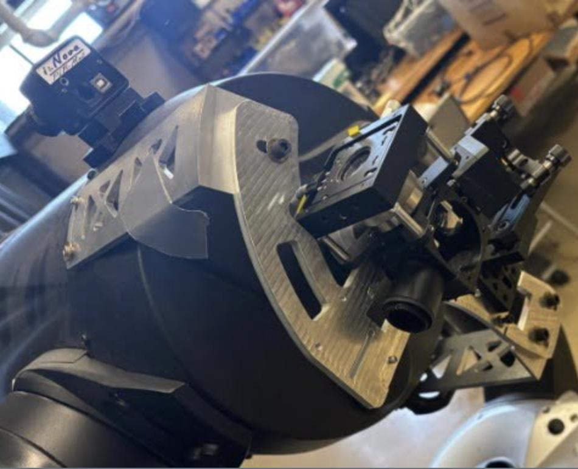
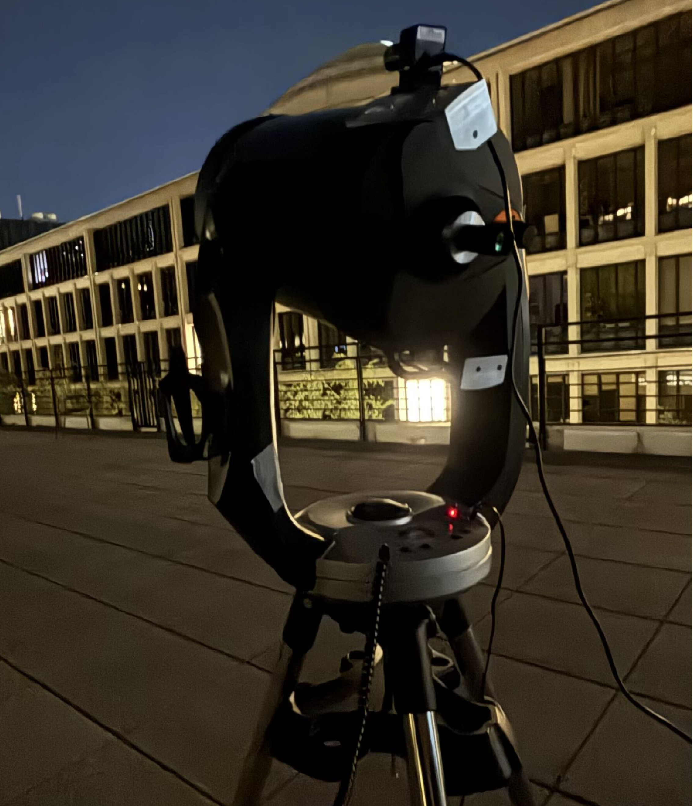

MIT STAR Lab
Portable Telescope for Lasercom (PorTel)
February 2026 – Present



Summary
CubeSats are typically limited by how they return data to the ground. Most still rely on radio links. Laser communication offers higher data rates, a more compact terminal, and fewer regulatory constraints, but it requires the ground station to acquire and track the beam with high precision. This project is a portable optical ground station that can follow CubeSat motion and be transported between sites.
The station is built on a Celestron CPC1100 with a custom backend that filters and detects lasers at 1537 nm and 1563 nm. A 320CSX short-wave infrared camera and an avalanche photodiode (APD) image the field and close the loop that keeps the target centered in the frame. Because both detectors are sensitive to optical aberrations, I traced the backend path in Optiland and on an optical table, placing lenses and mirrors so the signal focuses to within one micrometer. A microcontroller board with a beacon transmitter gives the CubeSat a reference for pointing back to Earth. Calibration against the International Space Station and catalogued stars produced a preliminary 23% improvement in data precision and relay speed.